library(gsheet)
micelial <- gsheet2tbl("https://docs.google.com/spreadsheets/d/1bq2N19DcZdtax2fQW9OHSGMR0X2__Z9T/edit#gid=959387827") 1. Carregamento de dados
2. Carregamento pacotes
library(mvtnorm)
library(survival)
library(TH.data)
library(MASS)
library(tidyverse)3. Visualização dos dados
micelial |>
ggplot(aes(especie, tcm))+
geom_jitter(width = 0.01)+
stat_summary(
geom = "point",
fun.y = "mean",
size = 3,
color = "cornflowerblue"
)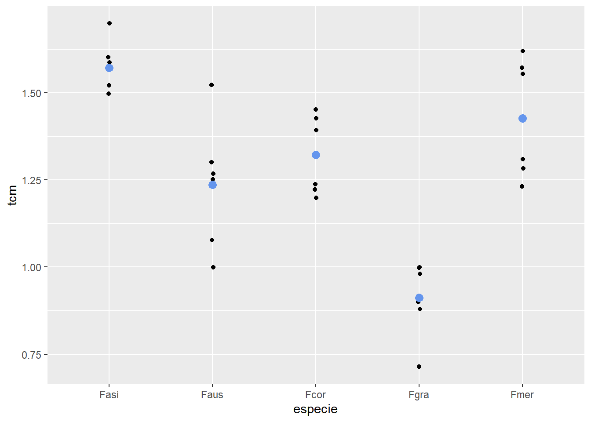
4. Testando as premissas
Antes da execução da ANOVA é verificada as premissas: homogeneidade de variâncias e normalidade.
4.1 Teste de Bartlett
O teste de Bartlett é usado para verificar se as amostras têm homogeneidade de variâncias (variâncias iguais).
4.1.1 Pressupostos
O teste assume que as observações são independentes.
4.1.2 Hipóteses
Hipótese nula: as variâncias são iguais.
Hipótese alternativa: As variâncias são desiguais para pelo menos dois grupos.
m1 <- lm(tcm ~ especie-1, data = micelial)
anova(m1) Analysis of Variance Table
Response: tcm
Df Sum Sq Mean Sq F value Pr(>F)
especie 5 51.677 10.3354 552.2 < 2.2e-16 ***
Residuals 25 0.468 0.0187
---
Signif. codes: 0 '***' 0.001 '**' 0.01 '*' 0.05 '.' 0.1 ' ' 1summary(m1)
Call:
lm(formula = tcm ~ especie - 1, data = micelial)
Residuals:
Min 1Q Median 3Q Max
-0.23667 -0.09667 0.01583 0.08833 0.28333
Coefficients:
Estimate Std. Error t value Pr(>|t|)
especieFasi 1.57167 0.05585 28.14 < 2e-16 ***
especieFaus 1.23667 0.05585 22.14 < 2e-16 ***
especieFcor 1.32167 0.05585 23.66 < 2e-16 ***
especieFgra 0.91167 0.05585 16.32 7.66e-15 ***
especieFmer 1.42667 0.05585 25.54 < 2e-16 ***
---
Signif. codes: 0 '***' 0.001 '**' 0.01 '*' 0.05 '.' 0.1 ' ' 1
Residual standard error: 0.1368 on 25 degrees of freedom
Multiple R-squared: 0.991, Adjusted R-squared: 0.9892
F-statistic: 552.2 on 5 and 25 DF, p-value: < 2.2e-16hist(m1$residuals) 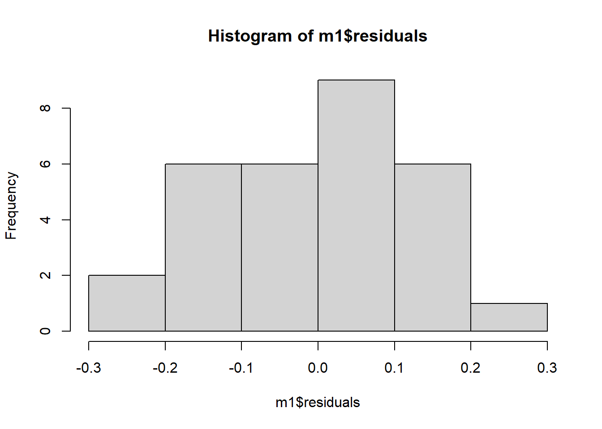
4.2 Shapiro-Wilk
Para verificar se os dados apresentam uma distribuição normal foi utilizada a função shapiro.test.
shapiro.test(m1$residuals)
Shapiro-Wilk normality test
data: m1$residuals
W = 0.9821, p-value = 0.87824.3 DHARma e Performance
Os pacotes performance e DHARma são utilizados para também para averiguar se os dados apresentam normalidade e se as variâncias são heterogêneas.
O DHARma faz o outro test (KS test), saída das variâncias com texto em vermelho indica que as variâncias são heterogêneas.
library(DHARMa)
plot(simulateResiduals(m1)) 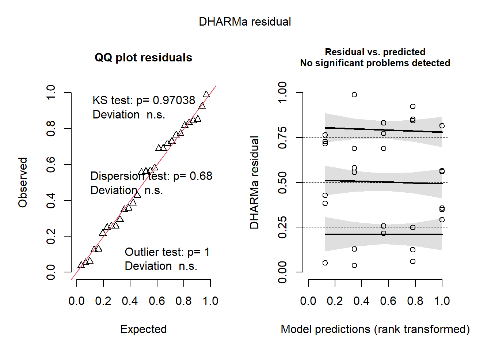
library(performance)
check_normality(m1) OK: residuals appear as normally distributed (p = 0.878).check_heteroscedasticity(m1) OK: Error variance appears to be homoscedastic (p = 0.880).check_model(m1)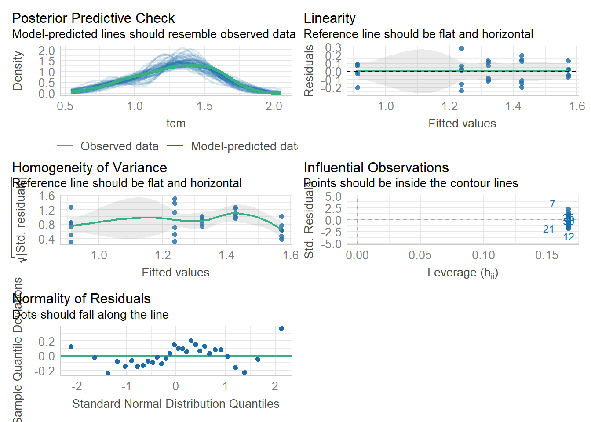
5. Diferença entre médias
Foi utilizado o pacote emmeans para calcular as médias e o pacote multcomp para fazer a comparações multiplas de médias
library(emmeans)
medias1 <- emmeans(m1, ~ especie)
library(multcomp)
library(multcompView)
cld(medias1) especie emmean SE df lower.CL upper.CL .group
Fgra 0.912 0.0559 25 0.797 1.03 1
Faus 1.237 0.0559 25 1.122 1.35 2
Fcor 1.322 0.0559 25 1.207 1.44 2
Fmer 1.427 0.0559 25 1.312 1.54 23
Fasi 1.572 0.0559 25 1.457 1.69 3
Confidence level used: 0.95
P value adjustment: tukey method for comparing a family of 5 estimates
significance level used: alpha = 0.05
NOTE: If two or more means share the same grouping symbol,
then we cannot show them to be different.
But we also did not show them to be the same. As médias foram separadas em 3 grupos. No entanto a espécie Fmer diferiu apenas em relação a espécie Fgra (grupo 1), e não diferindo estatísticamente das demais espécies (grupos 2 e 3).
6. Carregando outro conjunto de dados
Foi utilizado um conjunto de dados presente no R “InsectSprays", atribuído a um objeto.
inseticida <- InsectSprays
library(tidyverse)
inseticida |>
count(spray) spray n
1 A 12
2 B 12
3 C 12
4 D 12
5 E 12
6 F 127. Visualização dos dados
foi plotado um gráfico boxplot para a visualização dos dados.
library(ggplot2)
library(ggthemes)
theme_set(theme_bw())
inseticida |>
ggplot(aes(spray, count, group = spray, fill = spray))+
geom_boxplot()+
theme_few()+
scale_fill_manual(values = c("#669933", "#FFCC66", "#996633", "#999933", "#336699", "#993366")) 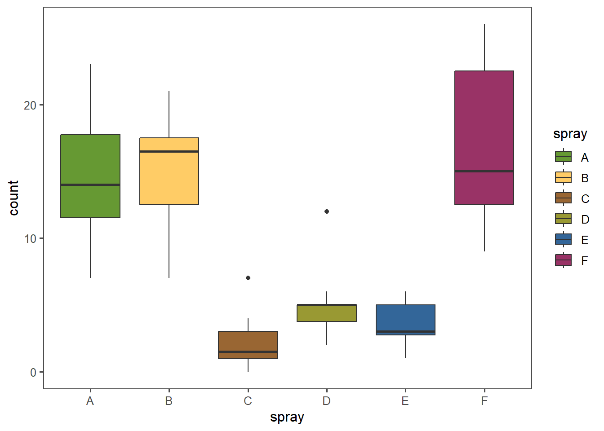
Na visualização é possível observar três agrupamento, tratamento spray A e B (grupo 1), C, D e E (grupo 2) e F (grupo 3).
8. Ajuste do novo modelo
m1 <- lm(count ~ spray,
data = inseticida)
summary(m1)
Call:
lm(formula = count ~ spray, data = inseticida)
Residuals:
Min 1Q Median 3Q Max
-8.333 -1.958 -0.500 1.667 9.333
Coefficients:
Estimate Std. Error t value Pr(>|t|)
(Intercept) 14.5000 1.1322 12.807 < 2e-16 ***
sprayB 0.8333 1.6011 0.520 0.604
sprayC -12.4167 1.6011 -7.755 7.27e-11 ***
sprayD -9.5833 1.6011 -5.985 9.82e-08 ***
sprayE -11.0000 1.6011 -6.870 2.75e-09 ***
sprayF 2.1667 1.6011 1.353 0.181
---
Signif. codes: 0 '***' 0.001 '**' 0.01 '*' 0.05 '.' 0.1 ' ' 1
Residual standard error: 3.922 on 66 degrees of freedom
Multiple R-squared: 0.7244, Adjusted R-squared: 0.7036
F-statistic: 34.7 on 5 and 66 DF, p-value: < 2.2e-169. Comparação de médias
Usou o pacote emmeans para calcular as médias e em seguida realizou a comparação de médias utilizando o pacote multcomp.
anova(m1) Analysis of Variance Table
Response: count
Df Sum Sq Mean Sq F value Pr(>F)
spray 5 2668.8 533.77 34.702 < 2.2e-16 ***
Residuals 66 1015.2 15.38
---
Signif. codes: 0 '***' 0.001 '**' 0.01 '*' 0.05 '.' 0.1 ' ' 1library(emmeans)
m1_medias <- emmeans(m1, ~ spray)
plot(m1_medias) 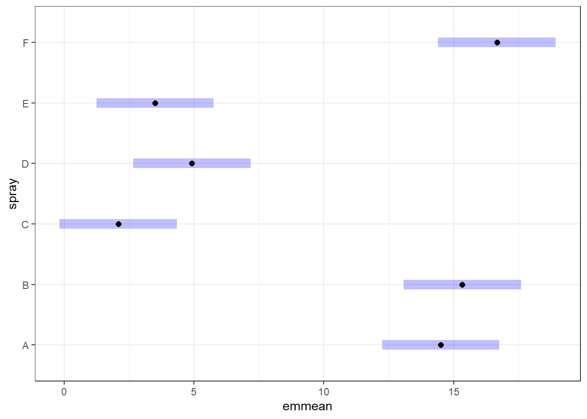
library(multcomp)
cld(m1_medias) spray emmean SE df lower.CL upper.CL .group
C 2.08 1.13 66 -0.177 4.34 1
E 3.50 1.13 66 1.240 5.76 1
D 4.92 1.13 66 2.656 7.18 1
A 14.50 1.13 66 12.240 16.76 2
B 15.33 1.13 66 13.073 17.59 2
F 16.67 1.13 66 14.406 18.93 2
Confidence level used: 0.95
P value adjustment: tukey method for comparing a family of 6 estimates
significance level used: alpha = 0.05
NOTE: If two or more means share the same grouping symbol,
then we cannot show them to be different.
But we also did not show them to be the same. Assim como no gráfico boxplot no item 7., aqui é possível também visualizar o agrupamento em três grupos de eficiência de controle. Tratamento spray A e B (grupo 1), C, D e E (grupo 2) e F (grupo 3).
10. Testando premissas
Foi verificada a normalidade e homogeneidade de variâncias do conjunto de dados utilizando:
hist, qqnorm, qqline e shapiro.test para averiguar a normalidade dos dados;
bartlett.test para verificar a homocedasticidade;
E os pacotes perfomance e DARMa para verificar as duas premissas, normalidade e homocedasticidade.
m1$residuals 1 2 3 4 5 6
-4.50000000 -7.50000000 5.50000000 -0.50000000 -0.50000000 -2.50000000
7 8 9 10 11 12
-4.50000000 8.50000000 2.50000000 5.50000000 -0.50000000 -1.50000000
13 14 15 16 17 18
-4.33333333 1.66666667 5.66666667 -4.33333333 0.66666667 -1.33333333
19 20 21 22 23 24
1.66666667 1.66666667 3.66666667 5.66666667 -8.33333333 -2.33333333
25 26 27 28 29 30
-2.08333333 -1.08333333 4.91666667 -0.08333333 0.91666667 -1.08333333
31 32 33 34 35 36
-0.08333333 -1.08333333 0.91666667 -2.08333333 -1.08333333 1.91666667
37 38 39 40 41 42
-1.91666667 0.08333333 7.08333333 1.08333333 -0.91666667 -1.91666667
43 44 45 46 47 48
0.08333333 0.08333333 0.08333333 0.08333333 -2.91666667 -0.91666667
49 50 51 52 53 54
-0.50000000 1.50000000 -0.50000000 1.50000000 -0.50000000 2.50000000
55 56 57 58 59 60
-2.50000000 -2.50000000 -0.50000000 -1.50000000 2.50000000 0.50000000
61 62 63 64 65 66
-5.66666667 -7.66666667 -1.66666667 5.33333333 -1.66666667 -0.66666667
67 68 69 70 71 72
-3.66666667 -6.66666667 9.33333333 9.33333333 7.33333333 -3.66666667 hist(m1$residuals) qqnorm(m1$residuals)
qqline(m1$residuals) 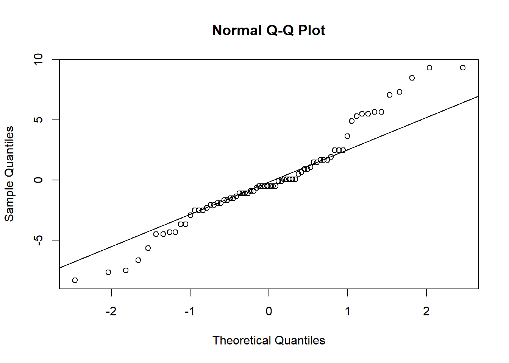
shapiro.test(m1$residuals)
Shapiro-Wilk normality test
data: m1$residuals
W = 0.96006, p-value = 0.02226bartlett.test(count ~ spray,
data = inseticida)
Bartlett test of homogeneity of variances
data: count by spray
Bartlett's K-squared = 25.96, df = 5, p-value = 9.085e-05library(performance)
check_normality(m1) Warning: Non-normality of residuals detected (p = 0.022).check_heteroscedasticity(m1) Warning: Heteroscedasticity (non-constant error variance) detected (p < .001).library(DHARMa)
plot(simulateResiduals(m1))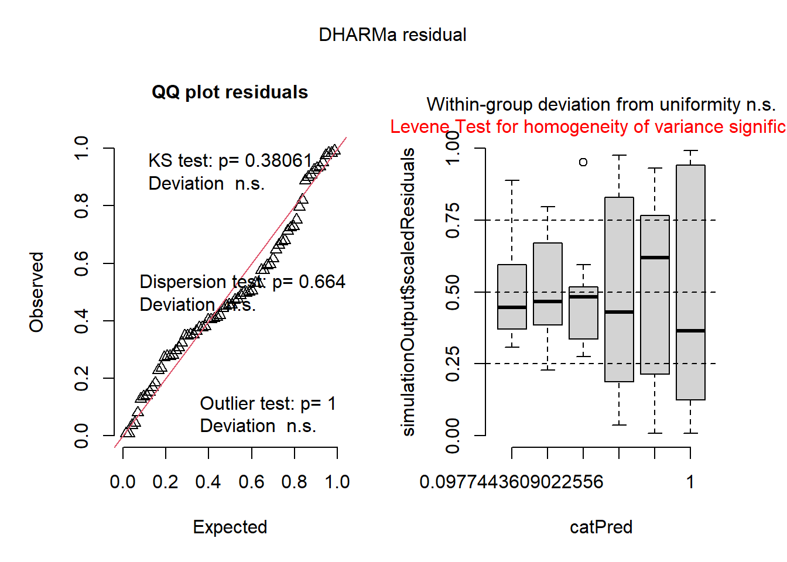
Os dados não apresentaram distribuição normal e homogeneidade de variância.
O próximo passo é utilizar a transformação dos dados para tentar corrigir os erros de normalidade e homocedasticidade.
11. Tranformação
11.1 Formas de visualização das comparações de médias
Foi usada a função pwpp (emmeans) para plotar os valores de probabilidade associados as comparações pareadas das médias marginais estimadas.
m2 <- lm(count ~ spray,
data = inseticida)
summary(m2)
Call:
lm(formula = count ~ spray, data = inseticida)
Residuals:
Min 1Q Median 3Q Max
-8.333 -1.958 -0.500 1.667 9.333
Coefficients:
Estimate Std. Error t value Pr(>|t|)
(Intercept) 14.5000 1.1322 12.807 < 2e-16 ***
sprayB 0.8333 1.6011 0.520 0.604
sprayC -12.4167 1.6011 -7.755 7.27e-11 ***
sprayD -9.5833 1.6011 -5.985 9.82e-08 ***
sprayE -11.0000 1.6011 -6.870 2.75e-09 ***
sprayF 2.1667 1.6011 1.353 0.181
---
Signif. codes: 0 '***' 0.001 '**' 0.01 '*' 0.05 '.' 0.1 ' ' 1
Residual standard error: 3.922 on 66 degrees of freedom
Multiple R-squared: 0.7244, Adjusted R-squared: 0.7036
F-statistic: 34.7 on 5 and 66 DF, p-value: < 2.2e-16anova(m2) Analysis of Variance Table
Response: count
Df Sum Sq Mean Sq F value Pr(>F)
spray 5 2668.8 533.77 34.702 < 2.2e-16 ***
Residuals 66 1015.2 15.38
---
Signif. codes: 0 '***' 0.001 '**' 0.01 '*' 0.05 '.' 0.1 ' ' 1library(emmeans)
m2_medias <- emmeans(m2, ~ spray)
plot(m2_medias) 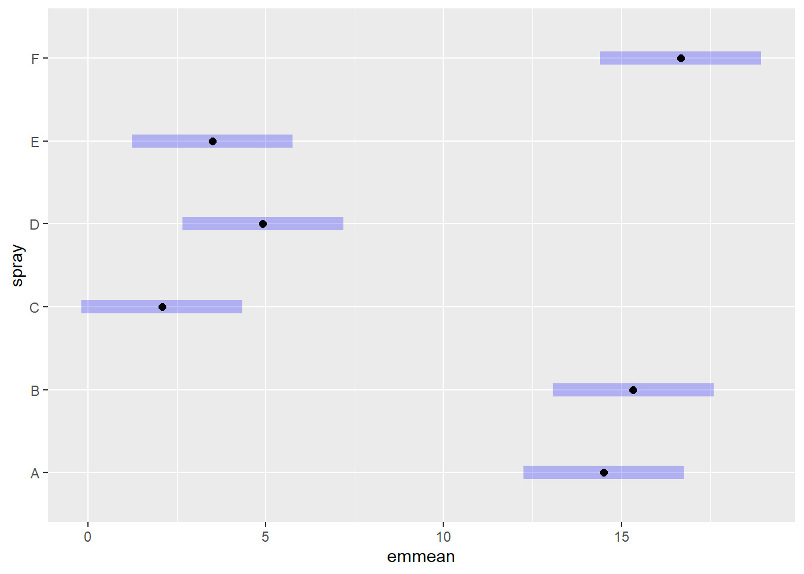
library(multcomp)
cld(m2_medias) spray emmean SE df lower.CL upper.CL .group
C 2.08 1.13 66 -0.177 4.34 1
E 3.50 1.13 66 1.240 5.76 1
D 4.92 1.13 66 2.656 7.18 1
A 14.50 1.13 66 12.240 16.76 2
B 15.33 1.13 66 13.073 17.59 2
F 16.67 1.13 66 14.406 18.93 2
Confidence level used: 0.95
P value adjustment: tukey method for comparing a family of 6 estimates
significance level used: alpha = 0.05
NOTE: If two or more means share the same grouping symbol,
then we cannot show them to be different.
But we also did not show them to be the same. pwpm(m2_medias) A B C D E F
A [14.50] 0.9952 <.0001 <.0001 <.0001 0.7542
B -0.833 [15.33] <.0001 <.0001 <.0001 0.9603
C 12.417 13.250 [ 2.08] 0.4921 0.9489 <.0001
D 9.583 10.417 -2.833 [ 4.92] 0.9489 <.0001
E 11.000 11.833 -1.417 1.417 [ 3.50] <.0001
F -2.167 -1.333 -14.583 -11.750 -13.167 [16.67]
Row and column labels: spray
Upper triangle: P values adjust = "tukey"
Diagonal: [Estimates] (emmean)
Lower triangle: Comparisons (estimate) earlier vs. laterpwpp(m2_medias) 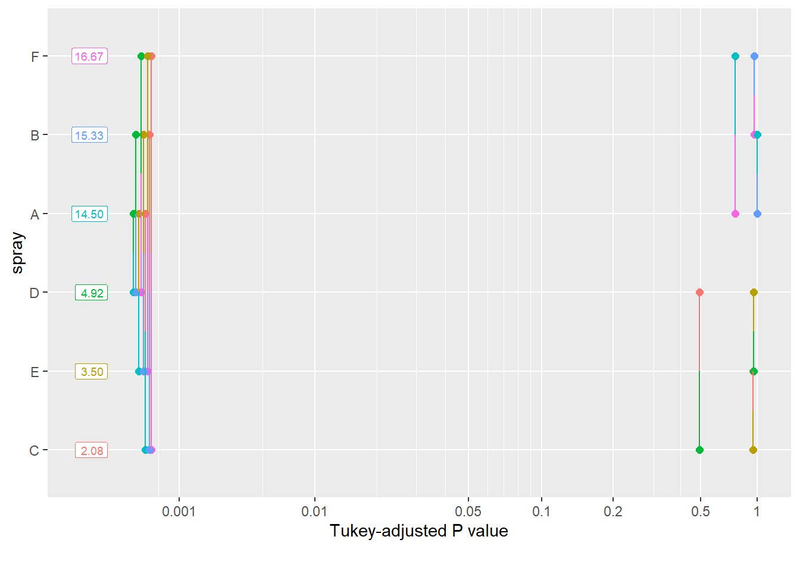
pairs(m2_medias) contrast estimate SE df t.ratio p.value
A - B -0.833 1.6 66 -0.520 0.9952
A - C 12.417 1.6 66 7.755 <.0001
A - D 9.583 1.6 66 5.985 <.0001
A - E 11.000 1.6 66 6.870 <.0001
A - F -2.167 1.6 66 -1.353 0.7542
B - C 13.250 1.6 66 8.276 <.0001
B - D 10.417 1.6 66 6.506 <.0001
B - E 11.833 1.6 66 7.391 <.0001
B - F -1.333 1.6 66 -0.833 0.9603
C - D -2.833 1.6 66 -1.770 0.4921
C - E -1.417 1.6 66 -0.885 0.9489
C - F -14.583 1.6 66 -9.108 <.0001
D - E 1.417 1.6 66 0.885 0.9489
D - F -11.750 1.6 66 -7.339 <.0001
E - F -13.167 1.6 66 -8.223 <.0001
P value adjustment: tukey method for comparing a family of 6 estimates m2$residuals 1 2 3 4 5 6
-4.50000000 -7.50000000 5.50000000 -0.50000000 -0.50000000 -2.50000000
7 8 9 10 11 12
-4.50000000 8.50000000 2.50000000 5.50000000 -0.50000000 -1.50000000
13 14 15 16 17 18
-4.33333333 1.66666667 5.66666667 -4.33333333 0.66666667 -1.33333333
19 20 21 22 23 24
1.66666667 1.66666667 3.66666667 5.66666667 -8.33333333 -2.33333333
25 26 27 28 29 30
-2.08333333 -1.08333333 4.91666667 -0.08333333 0.91666667 -1.08333333
31 32 33 34 35 36
-0.08333333 -1.08333333 0.91666667 -2.08333333 -1.08333333 1.91666667
37 38 39 40 41 42
-1.91666667 0.08333333 7.08333333 1.08333333 -0.91666667 -1.91666667
43 44 45 46 47 48
0.08333333 0.08333333 0.08333333 0.08333333 -2.91666667 -0.91666667
49 50 51 52 53 54
-0.50000000 1.50000000 -0.50000000 1.50000000 -0.50000000 2.50000000
55 56 57 58 59 60
-2.50000000 -2.50000000 -0.50000000 -1.50000000 2.50000000 0.50000000
61 62 63 64 65 66
-5.66666667 -7.66666667 -1.66666667 5.33333333 -1.66666667 -0.66666667
67 68 69 70 71 72
-3.66666667 -6.66666667 9.33333333 9.33333333 7.33333333 -3.66666667 hist(m2$residuals) 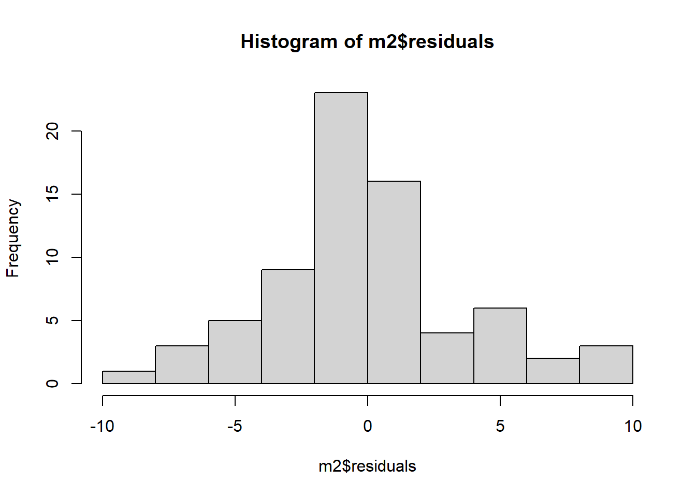
qqnorm(m2$residuals)
qqline(m2$residuals) 
shapiro.test(m2$residuals)
Shapiro-Wilk normality test
data: m2$residuals
W = 0.96006, p-value = 0.02226bartlett.test(count ~ spray,
data = inseticida)
Bartlett test of homogeneity of variances
data: count by spray
Bartlett's K-squared = 25.96, df = 5, p-value = 9.085e-05library(performance)
check_normality(m2) Warning: Non-normality of residuals detected (p = 0.022).check_heteroscedasticity(m2) Warning: Heteroscedasticity (non-constant error variance) detected (p < .001).library(DHARMa)
plot(simulateResiduals(m2)) 
11.2 Transformação Box-Cox
library(MASS)
b <- boxcox(lm(inseticida$count + 0.1 ~1)) 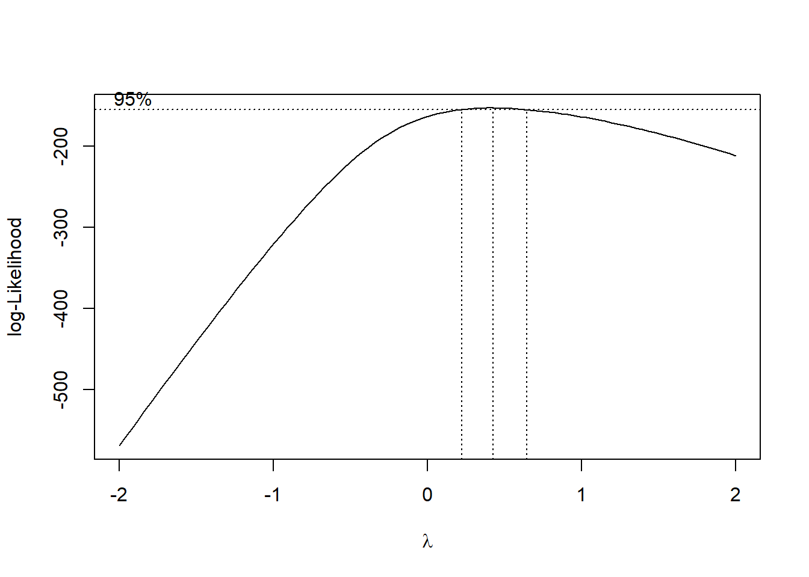
lambda <- b$x[which.max(b$y)]
lambda [1] 0.4242424inseticida$count3 <- (inseticida$count ^ lambda - 1)
lambda[1] 0.4242424inseticida$count3 [1] 1.6560878 1.2831079 2.5641184 2.0636287 2.0636287 1.8696866
[7] 1.6560878 2.7818362 2.3266617 2.5641184 2.0636287 1.9688074
[13] 1.7656865 2.3266617 2.6386604 1.7656865 2.2421924 2.0636287
[19] 2.3266617 2.3266617 2.4873981 2.6386604 1.2831079 1.9688074
[25] -1.0000000 0.0000000 1.2831079 0.3418677 0.5937312 0.0000000
[31] 0.3418677 0.0000000 0.5937312 -1.0000000 0.0000000 0.8006089
[37] 0.5937312 0.9793962 1.8696866 1.1385764 0.8006089 0.5937312
[43] 0.9793962 0.9793962 0.9793962 0.9793962 0.3418677 0.8006089
[49] 0.5937312 0.9793962 0.5937312 0.9793962 0.5937312 1.1385764
[55] 0.0000000 0.0000000 0.5937312 0.3418677 1.1385764 0.8006089
[61] 1.7656865 1.5399792 2.1546255 2.7111854 2.1546255 2.2421924
[67] 1.9688074 1.6560878 2.9837468 2.9837468 2.8507397 1.968807411.2 Não paramétrico
A segunda alternativa para explorar os efeitos dos tratamentos desse conjunto de dados pode ser utilizado o teste não paramétrico, para a comparação entre grupos.
Utilizou o teste Kruskal-Wallis.
library(agricolae)
kruskal.test(count ~ spray, data = inseticida)
Kruskal-Wallis rank sum test
data: count by spray
Kruskal-Wallis chi-squared = 54.691, df = 5, p-value = 1.511e-10m3 <- kruskal(inseticida$count, inseticida$spray, group = TRUE)
m3 $statistics
Chisq Df p.chisq t.value MSD
54.69134 5 1.510845e-10 1.996564 8.462804
$parameters
test p.ajusted name.t ntr alpha
Kruskal-Wallis none inseticida$spray 6 0.05
$means
inseticida.count rank std r Min Max Q25 Q50 Q75
A 14.500000 52.16667 4.719399 12 7 23 11.50 14.0 17.75
B 15.333333 54.83333 4.271115 12 7 21 12.50 16.5 17.50
C 2.083333 11.45833 1.975225 12 0 7 1.00 1.5 3.00
D 4.916667 25.58333 2.503028 12 2 12 3.75 5.0 5.00
E 3.500000 19.33333 1.732051 12 1 6 2.75 3.0 5.00
F 16.666667 55.62500 6.213378 12 9 26 12.50 15.0 22.50
$comparison
NULL
$groups
inseticida$count groups
F 55.62500 a
B 54.83333 a
A 52.16667 a
D 25.58333 b
E 19.33333 bc
C 11.45833 c
attr(,"class")
[1] "group"11.3 GLMs
Os modelos lineares generalizados podem ser visto como um método de transformação mais elegante que os mostrados acima. Abaixo foi aplicado uma distribuição de Poisson.
Com a função glm é possível realizar o ajuste do modelo linear, sendo necessário indicar o conjunto de dados em questão, a variável resposta, a variável independente e a família de distribuição de probabilidade.
m4 <- glm(count ~ spray, family = poisson,
data = inseticida)
summary(m4)
Call:
glm(formula = count ~ spray, family = poisson, data = inseticida)
Deviance Residuals:
Min 1Q Median 3Q Max
-2.3852 -0.8876 -0.1482 0.6063 2.6922
Coefficients:
Estimate Std. Error z value Pr(>|z|)
(Intercept) 2.67415 0.07581 35.274 < 2e-16 ***
sprayB 0.05588 0.10574 0.528 0.597
sprayC -1.94018 0.21389 -9.071 < 2e-16 ***
sprayD -1.08152 0.15065 -7.179 7.03e-13 ***
sprayE -1.42139 0.17192 -8.268 < 2e-16 ***
sprayF 0.13926 0.10367 1.343 0.179
---
Signif. codes: 0 '***' 0.001 '**' 0.01 '*' 0.05 '.' 0.1 ' ' 1
(Dispersion parameter for poisson family taken to be 1)
Null deviance: 409.041 on 71 degrees of freedom
Residual deviance: 98.329 on 66 degrees of freedom
AIC: 376.59
Number of Fisher Scoring iterations: 5anova(m4) Analysis of Deviance Table
Model: poisson, link: log
Response: count
Terms added sequentially (first to last)
Df Deviance Resid. Df Resid. Dev
NULL 71 409.04
spray 5 310.71 66 98.33library(car)
Anova(m4) Analysis of Deviance Table (Type II tests)
Response: count
LR Chisq Df Pr(>Chisq)
spray 310.71 5 < 2.2e-16 ***
---
Signif. codes: 0 '***' 0.001 '**' 0.01 '*' 0.05 '.' 0.1 ' ' 1plot(simulateResiduals(m4)) 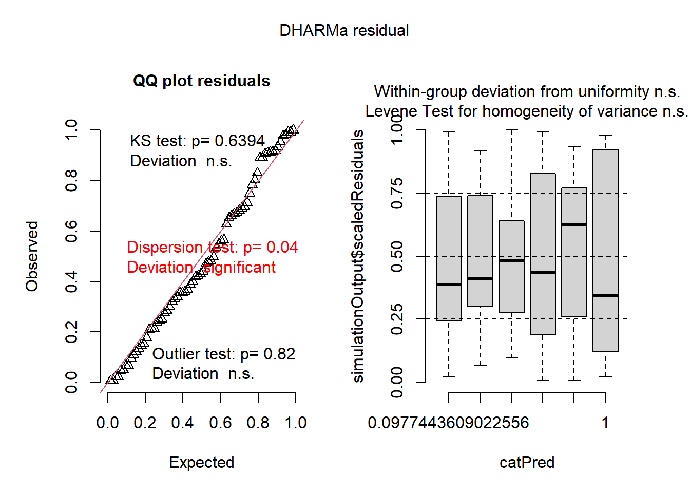
m4_medias <- emmeans(m4, ~ spray, type = "response")
cld(m4_medias) spray rate SE df asymp.LCL asymp.UCL .group
C 2.08 0.417 Inf 1.41 3.08 1
E 3.50 0.540 Inf 2.59 4.74 12
D 4.92 0.640 Inf 3.81 6.35 2
A 14.50 1.099 Inf 12.50 16.82 3
B 15.33 1.130 Inf 13.27 17.72 3
F 16.67 1.179 Inf 14.51 19.14 3
Confidence level used: 0.95
Intervals are back-transformed from the log scale
P value adjustment: tukey method for comparing a family of 6 estimates
Tests are performed on the log scale
significance level used: alpha = 0.05
NOTE: If two or more means share the same grouping symbol,
then we cannot show them to be different.
But we also did not show them to be the same. 12. ANOVA Fatorial
library(gsheet)
li <- gsheet2tbl("https://docs.google.com/spreadsheets/d/1bq2N19DcZdtax2fQW9OHSGMR0X2__Z9T/edit#gid=2023059672")
li |>
ggplot(aes(factor(dose), severity, color = factor(dose)))+
geom_jitter(width =0.1)+
facet_wrap(~treat)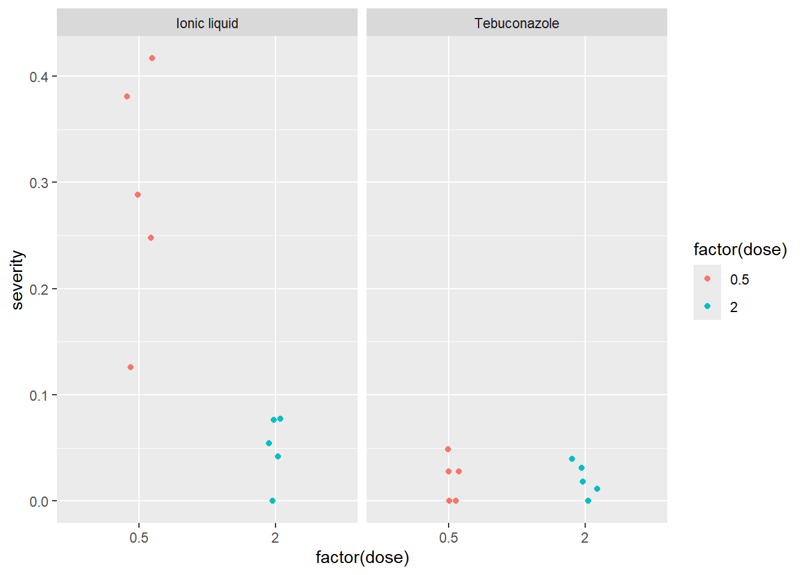
13. Modelo Fatorial (two-way anova)
mf <- lm(severity ~ treat*factor(dose),
data = li)
mf
Call:
lm(formula = severity ~ treat * factor(dose), data = li)
Coefficients:
(Intercept) treatTebuconazole
0.2921 -0.2711
factor(dose)2 treatTebuconazole:factor(dose)2
-0.2420 0.2412 anova(mf) Analysis of Variance Table
Response: severity
Df Sum Sq Mean Sq F value Pr(>F)
treat 1 0.113232 0.113232 30.358 4.754e-05 ***
factor(dose) 1 0.073683 0.073683 19.755 0.0004077 ***
treat:factor(dose) 1 0.072739 0.072739 19.502 0.0004326 ***
Residuals 16 0.059678 0.003730
---
Signif. codes: 0 '***' 0.001 '**' 0.01 '*' 0.05 '.' 0.1 ' ' 1plot(simulateResiduals(mf)) 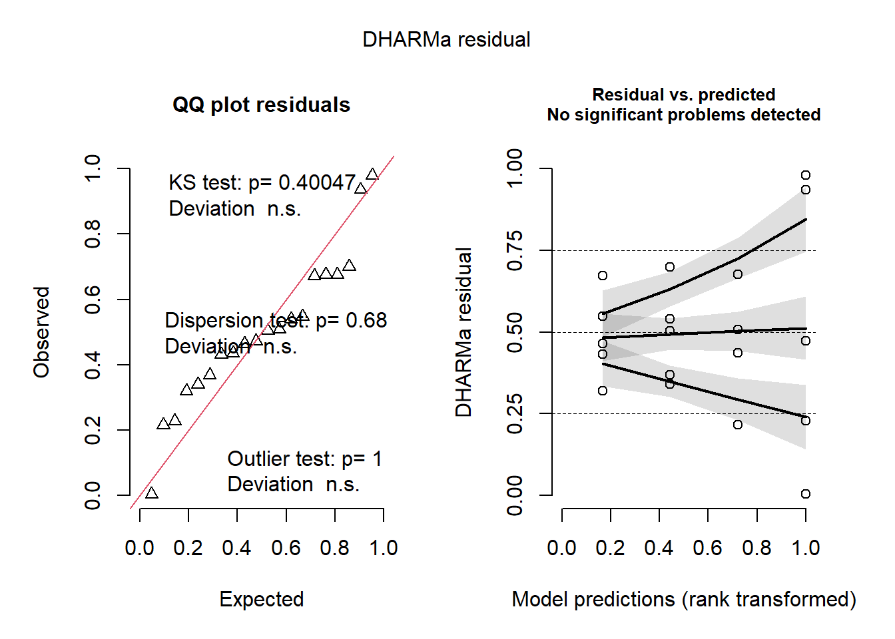
mf_medias <- emmeans(mf, ~ dose | treat)
cld(mf_medias) treat = Ionic liquid:
dose emmean SE df lower.CL upper.CL .group
2.0 0.0501 0.0273 16 -0.00781 0.1080 1
0.5 0.2921 0.0273 16 0.23420 0.3500 2
treat = Tebuconazole:
dose emmean SE df lower.CL upper.CL .group
2.0 0.0202 0.0273 16 -0.03768 0.0781 1
0.5 0.0210 0.0273 16 -0.03690 0.0789 1
Confidence level used: 0.95
significance level used: alpha = 0.05
NOTE: If two or more means share the same grouping symbol,
then we cannot show them to be different.
But we also did not show them to be the same.